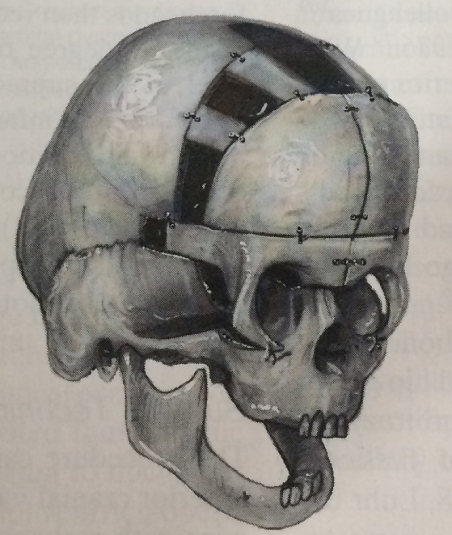
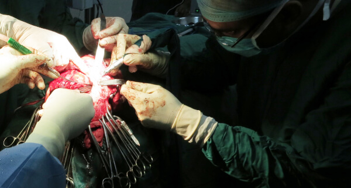
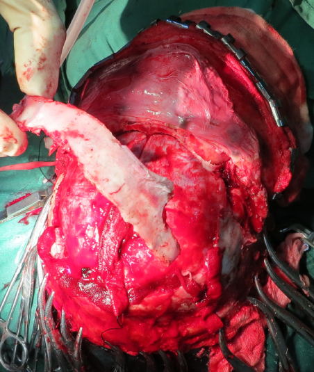
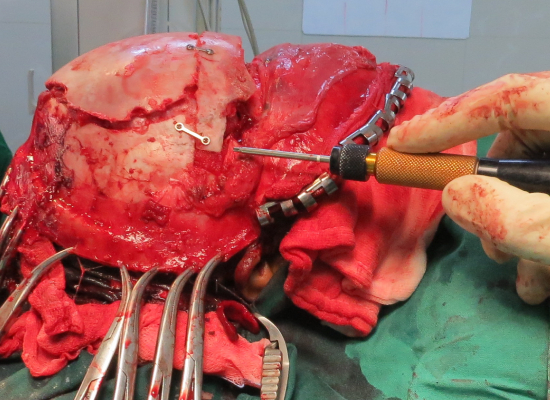
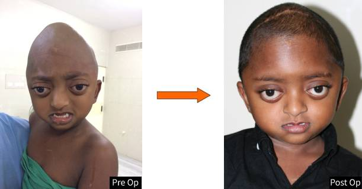
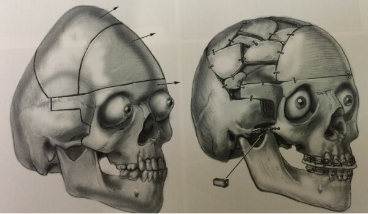

Trigonocephaly
A 9 year old boy presented to us with complaints of an abnormally shaped head and decreasing visual acuity of 12/6. Clinical examination and CT scans showed him to have premature fusion of his cranial sutures leading to Trigonocephaly (triangle shaped skull). The skull CT also showed a copper beaten appearance indicative of increased intracranial pressure. The plan was to do a bi-fronto-orbito bandeau advancement osteotomy.







